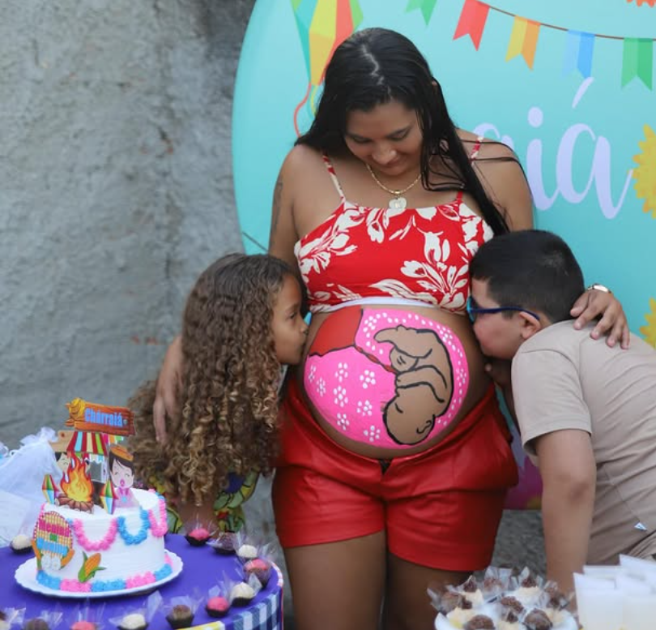
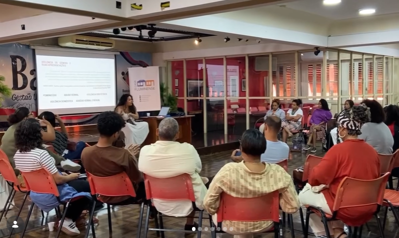
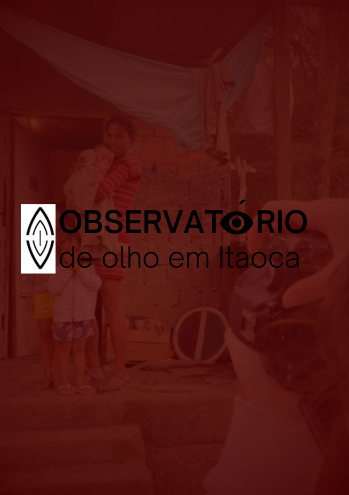

Um Espaço de acolhimento, cuidado, educação, saúde, e transformação dentro do Complexo do Salgueiro.
O Espaço Gaia é uma associação de clima e gênero sediada no CPX Salgueiro - São Gonçalo, dedicada à promoção da saúde, educação e justiça social. Atua com foco no protagonismo de mulheres, pessoas com útero e suas crias em contextos de vulnerabilidade, através de atividades formativas, culturais e de cuidado integral voltadas aos direitos reprodutivos, à equidade de gênero e à justiça climática. Também promove ações de fortalecimento territorial e produção de dados comunitários para a garantia de direitos. Observatório Popular de Justiça Socioambiental De Olho em Itaoca
Saiba mais
Mulheres atendidas
Projetos realizados
Famílias apoiadas

Programa Ciclos já protegeu quase 200 gestantes da violência obstétrica.
Saiba Mais
Projeto Aldear realizou pouco mais de 20 rodas de escuta ativa e acesso à informação.
Saiba Mais
Observatório De Olho em Itaoca participou e produziu 5 pesquisas para incidência comunitária.
Saiba Mais